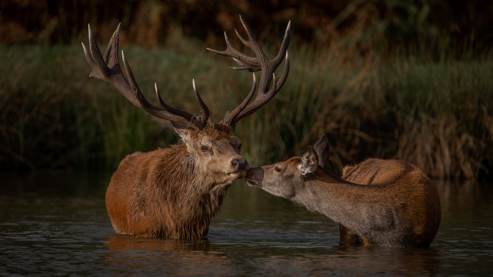
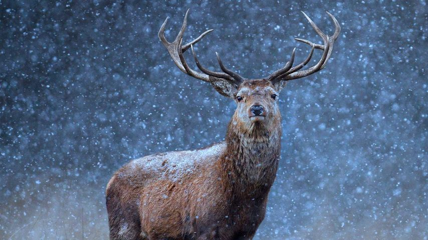
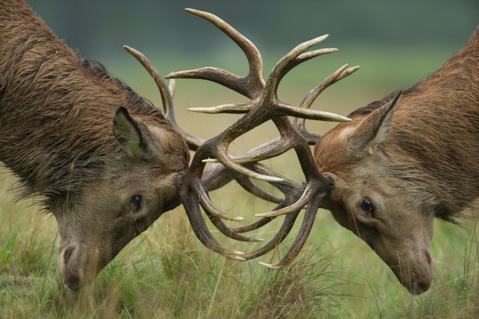

紅鹿 Red Deer

北極熊

北極熊

北極熊
Previous
Next
性格：
紅鹿的性格通常被描述為較為溫和和膽小，喜
歡保持警覺並保持距離。牠們通常是群居動物
，形成小型至中型的群體，由一頭領牡鹿帶領
。紅鹿在社交互動中表現出相對和平的態度，
並且展示出對彼此的關心和互相照顧的行為。
儘管牠們可能表現出某種程度的羞怯，但當受
到威脅時，紅鹿能夠表現出迅速且敏捷的反應
，以保護自己和群體成員的安全。
食物：
紅鹿是草食性動物，以植物為主要食物來源。
牠們主要以草、嫩葉、嫩芽、樹皮和灌木等植
物部分為食，並根據季節和生境的變化調整其
飲食。在夏季，紅鹿傾向於以多種草本植物為
食，而在冬季則轉向以灌木和樹皮為主要食物
，以應對較少的可食植物資源。牠們的消化系
統進化出能有效消化植物纖維的能力，並以大
量攝取植物來滿足其營養需求。
外表特徵＆外觀：
紅鹿是一種中型至大型的鹿類，具有獨特而迷
人的外表特徵和外觀。牠們的毛色主要為紅褐
色，背部呈現深色，腹部則較淡色。紅鹿的體
型高大優雅，雄性具有壯麗的鹿角，鹿角呈分
叉狀，從頭部兩側向上延伸。鹿角通常在秋季
生長至最大，並在冬季脱落再生。除了鹿角，
紅鹿還具有長而修長的腿和尖細的嘴巴，使其
更容易適應草原和森林等各種生境。
分布＆數量：
紅鹿分布廣泛，主要分布在歐亞大陸的不同地
區，包括歐洲、亞洲和北非等地。在歐洲，紅
鹿被認為是最常見的鹿類之一，並且在英國、
愛爾蘭、蘇格蘭和歐洲大陸的許多國家都有穩
定的自然和人工引入的群體。在亞洲，紅鹿分
布在中國、日本、俄羅斯等地，具有不同的亞
種和地區變異。然而，由於棲息地破壞、獵殺
和非法盜獵等因素的影響，紅鹿的數量在一些
地區面臨減少的風險。
生活型態＆習性：
紅鹿通常以群體方式生活，形成由一頭領牡鹿
帶領的小型至中型群體。牠們是主要的草食性
動物，以植物為食，根據季節和生境的變化調
整其飲食。紅鹿擁有出色的奔跑和跳躍能力，
可以在草原和森林等各種地形中迅速移動。牠
們通常在黎明和黃昏時活動，並在白天尋找遮
蔽處休息。雄性紅鹿在繁殖季節會進行角的角
逐以爭奪配偶權。
壽命：
紅鹿的壽命通常在10至15年左右。